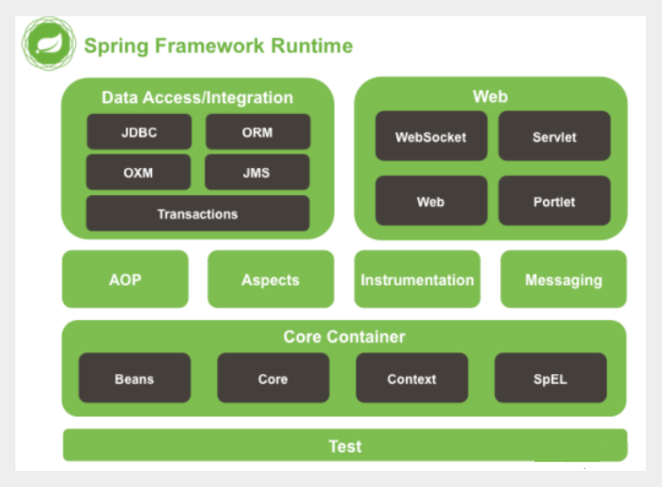
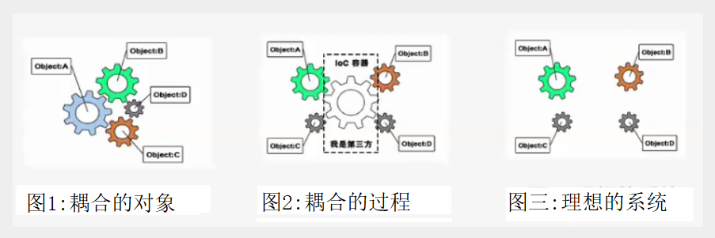
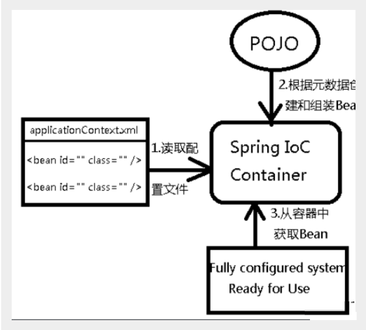

Spring概述
简介
Spring : 春天 —->给软件行业带来了春天
2002年，Rod Jahnson首次推出了Spring框架雏形interface21框架。
2004年3月24日，Spring框架以interface21框架为基础，经过重新设计，发布了1.0正式版。
很难想象Rod Johnson的学历 , 他是悉尼大学的博士，然而他的专业不是计算机，而是音乐学。
Spring理念 : 使现有技术更加实用 . 本身就是一个大杂烩 , 整合现有的框架技术
官方下载地址 : https://repo.spring.io/libs-release-local/org/springframework/spring/
GitHub : https://github.com/spring-projects
优点
1、Spring是一个开源免费的框架 , 容器 .
2、Spring是一个轻量级的框架 , 非侵入式的 .
3、控制反转 IoC , 面向切面 Aop
4、对事物的支持 , 对框架的支持
…….
一句话概括：
Spring是一个轻量级的控制反转(IoC)和面向切面(AOP)的容器（框架）。
组成

Spring 框架是一个分层架构，由 7 个定义良好的模块组成。Spring 模块构建在核心容器之上，核心容器定义了创建、配置和管理 bean 的方式 .

组成 Spring 框架的每个模块（或组件）都可以单独存在，或者与其他一个或多个模块联合实现。每个模块的功能如下：
- 核心容器：核心容器提供 Spring 框架的基本功能。核心容器的主要组件是 BeanFactory，它是工厂模式的实现。BeanFactory 使用控制反转（IOC） 模式将应用程序的配置和依赖性规范与实际的应用程序代码分开。
- Spring 上下文：Spring 上下文是一个配置文件，向 Spring 框架提供上下文信息。Spring 上下文包括企业服务，例如 JNDI、EJB、电子邮件、国际化、校验和调度功能。
- Spring AOP：通过配置管理特性，Spring AOP 模块直接将面向切面的编程功能 , 集成到了 Spring 框架中。所以，可以很容易地使 Spring 框架管理任何支持 AOP的对象。Spring AOP 模块为基于 Spring 的应用程序中的对象提供了事务管理服务。通过使用 Spring AOP，不用依赖组件，就可以将声明性事务管理集成到应用程序中。
- Spring DAO：JDBC DAO 抽象层提供了有意义的异常层次结构，可用该结构来管理异常处理和不同数据库供应商抛出的错误消息。异常层次结构简化了错误处理，并且极大地降低了需要编写的异常代码数量（例如打开和关闭连接）。Spring DAO 的面向 JDBC 的异常遵从通用的 DAO 异常层次结构。
- Spring ORM：Spring 框架插入了若干个 ORM 框架，从而提供了 ORM 的对象关系工具，其中包括 JDO、Hibernate 和 iBatis SQL Map。所有这些都遵从 Spring 的通用事务和 DAO 异常层次结构。
- Spring Web 模块：Web 上下文模块建立在应用程序上下文模块之上，为基于 Web 的应用程序提供了上下文。所以，Spring 框架支持与 Jakarta Struts 的集成。Web 模块还简化了处理多部分请求以及将请求参数绑定到域对象的工作。
- Spring MVC 框架：MVC 框架是一个全功能的构建 Web 应用程序的 MVC 实现。通过策略接口，MVC 框架变成为高度可配置的，MVC 容纳了大量视图技术，其中包括 JSP、Velocity、Tiles、iText 和 POI。
扩展
Spring Boot与Spring Cloud
- Spring Boot 是 Spring 的一套快速配置脚手架，可以基于Spring Boot 快速开发单个微服务;
- Spring Cloud是基于Spring Boot实现的；
- Spring Boot专注于快速、方便集成的单个微服务个体，Spring Cloud关注全局的服务治理框架；
- Spring Boot使用了约束优于配置的理念，很多集成方案已经帮你选择好了，能不配置就不配置 , Spring Cloud很大的一部分是基于Spring Boot来实现，Spring Boot可以离开Spring Cloud独立使用开发项目，但是Spring Cloud离不开Spring Boot，属于依赖的关系。
- SpringBoot在SpringClound中起到了承上启下的作用，如果你要学习SpringCloud必须要学习SpringBoot。
IOC理论推导
IOC基础
新建一个空白的maven项目
分析实现
我们先用我们原来的方式写一段代码 .
1、先写一个UserDao接口
public interface UserDao {
public void getUser();
}
2、再去写Dao的实现类
public class UserDaoImpl implements UserDao {
@Override
public void getUser() {
System.out.println("获取用户数据");
}
}
3、然后去写UserService的接口
public interface UserService {
public void getUser();
}
4、最后写Service的实现类
public class UserServiceImpl implements UserService {
private UserDao userDao = new UserDaoImpl();
@Override
public void getUser() {
userDao.getUser();
}
}
5、测试一下
@Test
public void test(){
UserService service = new UserServiceImpl();
service.getUser();
}
这是我们原来的方式 , 开始大家也都是这么去写的对吧 . 那我们现在修改一下 .
把Userdao的实现类增加一个 .
public class UserDaoMySqlImpl implements UserDao {
@Override
public void getUser() {
System.out.println("MySql获取用户数据");
}
}
紧接着我们要去使用MySql的话 , 我们就需要去service实现类里面修改对应的实现
public class UserServiceImpl implements UserService {
private UserDao userDao = new UserDaoMySqlImpl();
@Override
public void getUser() {
userDao.getUser();
}
}
在假设, 我们再增加一个Userdao的实现类 .
public class UserDaoOracleImpl implements UserDao {
@Override
public void getUser() {
System.out.println("Oracle获取用户数据");
}
}
那么我们要使用Oracle , 又需要去service实现类里面修改对应的实现 . 假设我们的这种需求非常大 , 这种方式就根本不适用了, 甚至反人类对吧 , 每次变动 , 都需要修改大量代码 . 这种设计的耦合性太高了, 牵一发而动全身 .
那我们如何去解决呢 ?
我们可以在需要用到他的地方 , 不去实现它 , 而是留出一个接口 , 利用set , 我们去代码里修改下 .
public class UserServiceImpl implements UserService {
private UserDao userDao;
// 利用set实现
public void setUserDao(UserDao userDao) {
this.userDao = userDao;
}
@Override
public void getUser() {
userDao.getUser();
}
}
现在去我们的测试类里 , 进行测试 ;
@Test
public void test(){
UserServiceImpl service = new UserServiceImpl();
service.setUserDao( new UserDaoMySqlImpl() );
service.getUser();
//那我们现在又想用Oracle去实现呢
service.setUserDao( new UserDaoOracleImpl() );
service.getUser();
}
可能很多人说没啥区别 . 但是他们已经发生了根本性的变化 , 很多地方都不一样了 . 仔细去思考一下 , 以前所有东西都是由程序去进行控制创建 , 而现在是由我们自行控制创建对象 , 把主动权交给了调用者 . 程序不用去管怎么创建,怎么实现了 . 它只负责提供一个接口 .
这种思想 , 从本质上解决了问题 , 我们程序员不再去管理对象的创建了 , 更多的去关注业务的实现 . 耦合性大大降低 . 这也就是IOC的原型 !
IOC本质
控制反转IoC(Inversion of Control)，是一种设计思想，DI(依赖注入)是实现IoC的一种方法，也有人认为DI只是IoC的另一种说法。没有IoC的程序中 , 我们使用面向对象编程 , 对象的创建与对象间的依赖关系完全硬编码在程序中，对象的创建由程序自己控制，控制反转后将对象的创建转移给第三方，个人认为所谓控制反转就是：获得依赖对象的方式反转了。

IoC是Spring框架的核心内容，使用多种方式完美的实现了IoC，可以使用XML配置，也可以使用注解，新版本的Spring也可以零配置实现IoC。
Spring容器在初始化时先读取配置文件，根据配置文件或元数据创建与组织对象存入容器中，程序使用时再从Ioc容器中取出需要的对象。

采用XML方式配置Bean的时候，Bean的定义信息是和实现分离的，而采用注解的方式可以把两者合为一体，Bean的定义信息直接以注解的形式定义在实现类中，从而达到了零配置的目的。
控制反转是一种通过描述（XML或注解）并通过第三方去生产或获取特定对象的方式。在Spring中实现控制反转的是IoC容器，其实现方法是依赖注入（Dependency Injection,DI）。
转载请注明来源，欢迎对文章中的引用来源进行考证，欢迎指出任何有错误或不够清晰的表达。可以在下面评论区评论，也可以邮件至 1589631311@qq.com